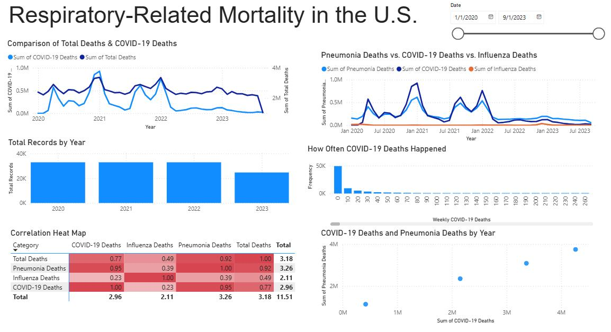
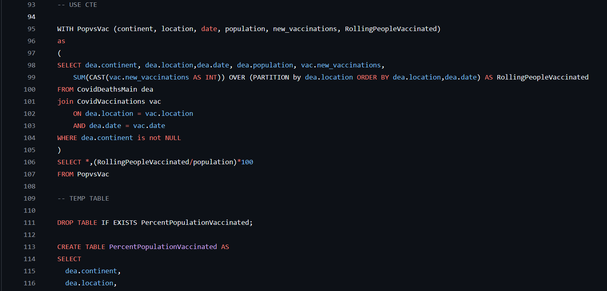
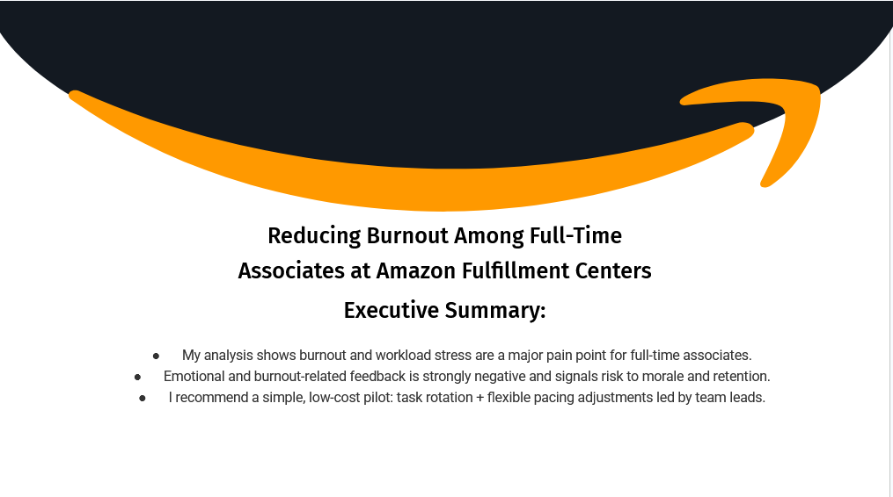
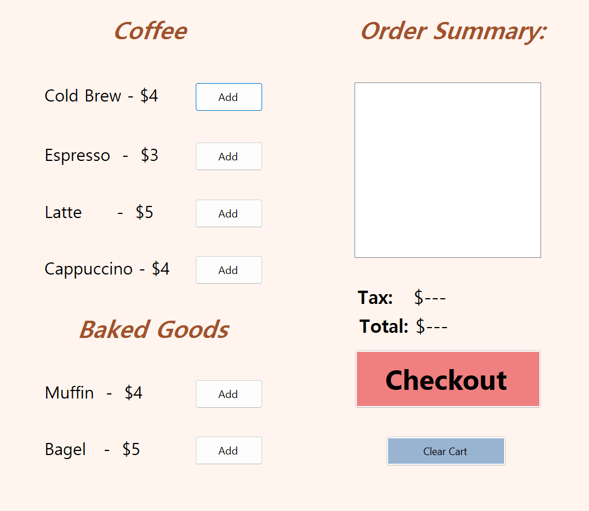

Nelson Pham
Clearer data. Better decisions.
I use analytics tools to clean, explore, and explain data in ways that support practical decisions.


My work
Projects.
A selection of analytics and technical projects, each focused on turning messy information into something structured, readable, and useful.

Library Operations Analytics Database
Designed a normalized relational database structure for library operations, including entity relationships, query planning, and reporting use cases.

Global COVID-19 Impact Analysis
Explored mortality, infection rates, and geographic differences in pandemic outcomes using SQL and Tableau.

Amazon Workforce Sentiment & Burnout Analysis
Analyzed employee feedback and transcripts to identify sentiment themes, burnout signals, and practical recommendations.
U.S. Respiratory Mortality Trends
Cleaned healthcare data, explored mortality trends, and built visuals to communicate patterns across time and demographics.

Bakery Vending Machine
Built a C# application with product selection, transaction handling, and activity logging.
Tools
Skills & Stack
A practical mix of analytics, data preparation, visualization, and business tools.
Data Analysis
Cleaning, exploration, trend analysis, and summarizing key findings.
Visualization
Dashboards and charts built for readability, comparison, and decisions.
Databases
Relational design, ERDs, SQL queries, and reporting-oriented structures.
Business Tools
Microsoft Project, Visio, SAP Analytics Cloud, and SAP ERP exposure.
About
Business analytics student at Cal State Fullerton.
I am interested in the space between business context and technical analysis: understanding the question, preparing the data, and presenting the answer in a way people can actually use.
- Education B.A. Business Analytics, California State University, Fullerton
- Focus Data analysis, visualization, SQL, reporting, and applied project work
- Tools Python, SQL, Tableau, Power BI, Excel, SPSS, SAP Analytics Cloud